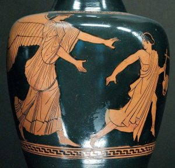

The following is the first half of the article. The second installment can be found here.
Philosophical Propaedeutics
Philosophy’s very first utterance, according to Aristotle,[1] present us with two seemingly incompatible positions: the unity of all, as posited by one causative principle (archē) to which Thales, lacking a better term, calls water, and the multiplicity of all, infested with an equal number of gods (πάντα πλήρη θεῶν εἶναι). Throughout its course, Greek philosophy remains incapable of reconciling these two positions.[2]
Even Plato, who, following Thales’s first insight, grounds the multiplicity of particular things to a universal idea, refrains from calling the Ideas gods or from assigning to gods the unifying function of the ideas, thus leaving his theology somewhere in-between Greek mythology and his conception of a demiurge who, contrary to the Christian connotations of the term, is not the creator of the world but merely the decorator that bestows upon the cosmos its cosmetic element by conforming to the formal patterns of the forms (Timaeus, 28-9).
The difficulty of uniting Thales’s philosophical monism with mythological polytheism—or, as the authors of the System in German Idealism demanded, in their nostalgia to return to the Greek beginnings, a “monotheism of reason” and a “polytheism of the imagination and art”[3]—was for the Greeks their conception of nature (physis). Nature, as that which keeps flowing out of a primordial source and that primordial source itself that remains “hidden,”[4] is itself its own origin or, rather, the lack of origin (Abgrund).
Several ideas find their birthplace in this image of the aboriginal flowing of nature. For example, nature’s anarchy and thus eternity, nature’s perennial emanation, and nature’s divinity—for a world “full of gods,” as Thales intimated, is itself divine. What held these ancient ideas together was an understanding of nature as necessary. For classical thought, physis exists necessarily and its necessary character renders any robust theology unnecessary. Thus, ancient polytheism, structured as it was around this cluster of concepts associated with nature, remains unable to resolve the opposition between the world’s one cause or principle and its many gods.
The need of a reduction back to one principle was deeply felt in the Greek mind, yet no Greek god could be raised to the dignity of a first principle. Hence, Simplicius, the last of the pagan philosophers, can call Thales an atheist[5] without fear of contradicting the thinker who conceived of a world asphyxiating with gods. As Origen was quick to realize, all polytheism is essentially atheism in disguise.[6]
Aristotle’s philosophy operates precisely on the distinction between what is man-made (technē) and what is independent of human craftsmanship (physei, i.e., the natural).[7] The very concept of physis makes sense only within such a schema that distinguishes the natural from the artificial. Heidegger’s reading of Aristotle discovers in the distinction between physis and technē “[t]wo kinds of generation” that “are contrasted with each other.”[8] He, then, continues: “When Aristotle time and again characterizes growing things by way of analogy with artifacts, does this mean he already understands the φύσει ὄντα as self-making artifacts? No, quite the contrary, he conceives of φύσις as self-production.”[9]
The difference between physis and technē inscribes them in an identity as the one can only be conceived by means of the other: indeed, either concept describes the same phenomenon, that of origination, it is only the manner of origination that differs. And their difference is man. Technē is man-made. Nature is not man-made (thus, it must make itself), rather nature is what makes man. Although nature “makes” man, no man is technically a man by nature, for it is technē that makes man him who makes (homo habilis). By the first tool man makes for himself a hand—for the hand becomes a hand when it ceases to be a tool and becomes that which handles tools. By the hand, man acquires the word (man speaks with his hands). The man of words stands up. By standing up (homo erectus) man also stands over against nature.
To these two kinds of generation correspond two God-conceptions: to nature what has been called a “natural theology”—a god restricted within nature (or, in Kant’s version, reason) alone. The other, following the paradigm of technē, is what we recognize as properly theological, especially in the wake of the Judeo-Christian conception of God.
Theopoetics I: Deus ex Machina
The origin of humanity, as both historians and anthropologists agree, is to be traced back to the invention of tools. But even before the first tool came to be, I was equipped with the hand. It was after the hand that the tool was made, as we often say, a “second” hand, only better and more effective. Thus, the hand became emancipated from being used only as a tool—it now manipulates the tools it had itself produced. With much of its duties transferred to the tools, the hand became free—it became creative. In fact, the two
moments must have coincided: the creation of the first tool by the hand marks the moment when the hand ceases to be a tool.
It is now recognized as that which has always been but only now can I become aware of it: my body.[10] The
awareness of my body and consequently, as we shall soon see, my self-awareness as a subject have always been dependent upon this dialectical relation between the grasping hand and its tool.[11] The tool always refers back to the hand, for the one is meaningful only in relation to the other. The tool is precisely what is graspable: our first concept (Begriff). It is not an accident that even for a sophisticated analysis of our being-in-the-world such Heidegger’s in Being and Time the world is this referential totality of “tools” that, in turn, reveal themselves according to two modes of “handiness” (Handlichkeit): as ready-at-hand (Zuhanden) and as present-at-hand (Vorhanden).
In more than one way, man was able to develop the ability to speak thanks to his hands. As he didn’t have to use his mouth as a hand—in order to fetch or hold things, as most animals do—his mouth became available for speech. Moreover, “as a man watched his hands at work, the changing shapes they fashioned must gradually have impressed themselves on his mind. Without this we should probably never have learnt to form symbols for things, nor, therefore, to speak.”[12]
Indeed, in one of his characteristically dense passages, Heidegger attempts to establish such a connection between the hand and the word:
Man himself acts [handelt] though the hand [Hand]; for the hand is, together with the word, the essential distinction of man. Only a being which, like man, “has” the word (μῦθος, λόγος), can and must “have” “the hand.” Through the hand occur both prayer and murder, greeting and thanks, oath and signal, and also the “work” of the hand, the “hand-work,” and the tool. The handshake seals the covenant. The hand brings about the “work” of destruction. The hand exists as hand only where there is disclosure and concealment. No animal has a hand, and a hand never originates from a paw or a claw or talon. Even the hand of one in desperation (it least of all) is never a talon, with which a person clutches wildly. The hand sprang forth only out of the word and together with the word. Man does not “have” hands, but the hand holds the essence of man, because the word as the essential realm of the hand is the ground of the essence of man.[13]
Dare we say that without his hands man would have been also unable to think? That man began thinking, and still thinks, with his hands, that is, according to a fundamental structure implied by paradigms of touch? That “every motion of the hand in every one of its works carries itself through the element of thinking” … so that “all the work of the hand is rooted in thinking”?[14] It seems that Aristotle would have agreed with this.
It must have been language that suggested to man the notion of creator God, that is of a God who creates by his word as much as by his hands—although, a more theologically informed position would also maintain the reverse, namely, that it was God the Logos who imparted in man both the ability to technē and to logos. Thus, techno-logy would ultimately originated in God’s original act of creation.
Therefore, we could speak of two epoch-making moments in the evolution of humanity with respect to such techno-theo-logy: The first technological achievement is man—that is, that being who, by the use of tools, fashions himself as a human over against the animal and the natural world. The second technological achievement is narrated in Mary Shelley’s Frankenstein. That is, not as one may assume, the animation of a corpse, but rather the self-deification of man—who, by the use of techno-science, makes himself a god. Mary Shelley aptly names Dr. Frankenstein “Victor” after God’s name “the potent Victor” in Milton’s Paradise Lost. Furthermore, the suggestive subtitle of Frankenstein “The Modern Prometheus” echoes Kant’s hailing a hero of technological innovation, Benjamin Franklin, as “the Prometheus of modern times.”[15]
Freud writing of the technological advances of his time suggests that they should be understood as the means by which humanity strives to attain those very characteristics humans have always attributed to their gods (e.g., omniscience, omnipresence, and so on). Thanks to technology, Freud argues, “[man] has become a god himself”—what he calls more explicitly “a prosthetic God.”[16] Derrida, echoing Freud, speaks of “artifacts and prostheses” that “tend to become more animistic, magical, mystical,”[17] so much so as to allow us to speak of religion as “the theological machine, the ‘machine of making gods.’”[18]
Thus, he proposes that “Instead of opposing them, as is almost always done, [religion and technology] ought to be thought together, as one and the same possibility: the machine-like and faith…”[19] It is within this techno-theo-logical framework that we can understand Bergson’s enigmatic conclusion to his essay on religion:
Mankind lies groaning, half crushed beneath the weight of its own progress. Men do not sufficiently realize that their future is in their own hands. Theirs is the task of determining first of all whether they want to go on living or not. Theirs the responsibility, then, for deciding if they want merely to live, or intend to make just the extra effort required for fulfilling, even on their refractory planet, the essential function of the universe, which is a machine for the making of gods.[20]
From our modern perspective, we may feel justified in taking pride in our mechanical world (that is, of a world understood precisely as a machine) for having rescued us from the superstitions of a bygone age when the workings of the world, shrouded in mystery, could only be seen as magical. Yet, language reminds us of what we would conveniently prefer to forget, namely the common ancestry of the magical and the mechanical. Linguistically, these two terms originated from the same root, that of the Proto-Indo-European maghana, a word that signifies “that which enables,” that which gives power over the natural (the machine) or the supernatural (magic)—assuming that such a distinction is even meaningful.
Machines are as magical as magic is mechanical. In some instances, as in the story of the Golem of Prague, the magical and the mechanical are united again through a demonstration of force, the supplementation of might,[21] and the will to power.
John Panteleimon Manoussakis is Associate Professor of Philosophy, College of the Holy Cross in the United States and Honorary Fellow of the Australian Catholic University, Australia. He is the recipient of a Templeton Foundation grant. He is the author of three books, editor of five volumes and he has published over thirty articles in English, Greek, Russian, Serbian, and Ukrainian. His books include God After Metaphysics: A Theological Aesthetic (Indiana University Press, 2007) and For the Unity of All: Contributions to the Theological Dialogue Between East and West (Cascade Books, 2015).
_________________________________________________________________________
[1] Aristotle, Metaphysics, A 3 (983b) and De Anima, A 5 (411a) respectively. See also, Diels and Kranz, Die Fragmente Der Vorsokratiker, vol. I (Zürich, Weidmann, 1996),76 and 79.
[2] For a discussion on the tension between these two principles with respect to Greek theology, see Etienne Gilson, God and Philosophy (New Haven: Yale University Press, 1969), 1-37.
[3] For the text and the problem of its authorship, see David Farrell Krell, The Tragic Absolute: German Idealism and the Languishing of God (Bloomington: Indiana University Press, 2005), 16-26.
[4] On Heraclitus famous fragment φύσις κρύπτεσθαι φιλεῖ (Diels-Kranz, fr. 123) see Pierre Hadot’s The Veil of Isis: An Essay on the History of the Idea of Nature, translated by Michael Chase (Cambridge: Harvard University Press, 2006).
[5] Simplicius, On Aristotle’s Physics, 23, 21 (DK, 13: “ὃς δοκεῖ καὶ ἄθεος γεγονέναι”).
[6] Origen speaks in his Exhortation to Martyrdom of a “polytheist atheism” (paragraph 32) and in Contra Celsum of an “atheist polytheism” (Book III, section 72).
[7] See, for instance, Aristotle, Physics B, 192b.
[8] Heidegger, “On the Essence and Concept of Φύσις in Aristotle’s Physics B, I” in Pathmarks, translated by Thomas Sheehan, edited by William McNeill (Cambridge: Cambridge University Press, 1998), p. 220.
[9] Ibid., 221.
[10] According to Sartre’s analysis, first I learned to use my body as an instrument and then to recognize it as my body: “The child has known for a long time how to grasp, to draw toward himself, to push away, and to hold on to something before he first learns to pick up his hand and to look at it. Frequent observation has shown that the child of two months does not see his hand as his hand. He looks at it, and if it is outside his visual field, he turns his head and seeks his hand with his eyes as if it did not depend on him to bring the hand back within his sight.” Being and Nothingness, translated by Hazel E. Barnes (New York: Washington Square Press, 1956), 469.
[11] “Far from the body being first for us and revealing things to us, it is the instrumental-things which in their original appearance indicate our body to us. The body is not a screen between things and ourselves; it manifests only the individuality and the contingency of our original relation to instrumental-things.” Jean-Paul Sartre, Being and Nothingness,428.
[12] Ibid., 217.
[13] Martin Heidegger, Parmenides, André Schuwer and Richard Rojcewicz, trans., (Bloomington: Indiana University Press, 1992), 80.
[14] Martin Heidegger, What is Called Thinking? Translated by J. Glenn Gray (New York: Harper & Row, 1968), 16.
[15] Immanuel Kant, On the Causes of Earthquakes (1:472).
[16] Sigmund Freud, Civilization and its Discontents, translated by James Strachey (New York and London: W.W. Norton, 1961), 44.
[17] Jacques Derrida, “Faith and Knowledge: The Two Sources of ‘Religion’ at the Limits of Reason Alone” in Religion, edited by Jacques Derrida and Gianni Vattimo (Stanford: Stanford University Press, 1998), 56.
[18] Ibid, 51.
[19] Ibid, 48.
[20] Henri Bergson, The Two Sources of Morality and Religion, translated by R. Ashley Audra and Cloudesley Brereton (Notre Dame: University of Notre Dame Press, 1977), 317.
[21] The English word “might” is etymologically linked to both magic and the machine.